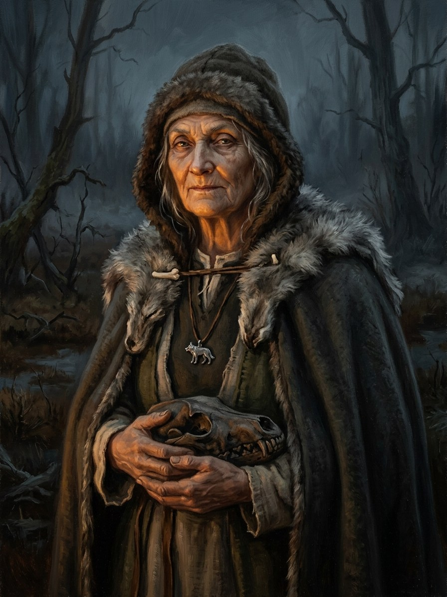

Pilkoji (the Grey One, Vilkų Motina)¶
Summary¶
Pilkoji (the Grey One), last Mother of the wolves (Vilkų Motina), born c. 1365, the first sworn woman; keeps the silver wolf and the pebble from Vytautas’s body from 27 Oct to Kūčios (24 Dec) 1430, then gives both to the Flame-Keeper Žiežirba. She lies down in the oldest bog of the Dykra with the Iron Wolf’s skull on Vėlinės, 2 Nov 1449 (Book V ch. 28).
Pilkoji (the Grey One, Vilkų Motina)

Pilkoji (the Grey One, Vilkų Motina) · character¶
Tipas |
veikėjas |
Metai |
c. 1365–1449 |
Status |
Sagos išmonė |
Pastaba |
Last Mother of the wolves; born c. 1365 (38 in 1404, Book III ch. 7; 84 in 1449, Book V ch. 28). Carries Eglė’s four names (Eglė’s own, her father’s, her mother’s, and the pine she sat under as a child: Book V ch. 1); keeps the silver wolf and the pebble from Vytautas’s body until Kūčios 1430; lies down in the oldest bog of the Dykra with the Iron Wolf’s skull (Vėlinės, 2 Nov 1449, Book V ch. 28). |
Appearance & tells¶
A village woman called Pilkoji, „the Grey One“, not for her hair but for the ash she has carried in her apron pocket since childhood, a fistful from her mother’s hearth renewed each spring from her own. At thirty-eight, when we first see her (Book III ch. 7), her palms are grey to the wrists and her scarf and clothes are grey; she knew the weight of everyone in Kalniškės, having lifted nearly all of them from bed to bench and bench to bier. Sworn into the wolves, she is shorter than the men, with grey hair cropped at the neck and a wolf pelt not cut for her, her palms grey to the elbow as if she had dipped them in an ash-pot and never taken them out; she does not speak, her eyes do not turn away where the men’s do, and she blinks only when the fire blinks (ch. 9). At seventy she sits on a fallen trunk with a bag of ash and watches Pabaiskas „as a midwife watches a birth that is not hers“ (Book V ch. 13). At eighty-four she has become what the wolves call šaknis, root: hard, dried, dark, with joints that no longer bend and hair „white as a layer of ash“, the same pelt she has worn for forty-five years on her shoulders, „no longer her size, but no longer foreign“ (Book V ch. 28). She lays a table at Vėlinės for the dead, with a place for each, and her gesture of mourning is to put out bread, a clay bowl of oat kisiel and a cup of black bog water.
Want · Need · Lie · Truth¶
Want (external) |
In 1404: to feed and keep company with her dead. Later: to keep the wolves alive and the flame’s promise kept, and to carry the names of those who are gone. |
Need (internal) |
To let go of the carrying: to name the dead to the bog and lie down with them. |
Lie they believe |
Someone has to keep remembering, or the dead are lost: she carries Eglė’s four names, Pušis’s and Kirmėlė’s, and the lost face of her sister Dalia. |
Truth they learn (or refuse) |
The bog asks ‚who are they?‘ and she answers; when the last of her people are named she lies down with the Iron Wolf’s skull and is released (Book V ch. 28). |
Arc by book¶
Book III (1404-1411). The village midwife of Kalniškės (b. c. 1365-66): her husband drowned in the Dubysa seven years earlier and her fourteen-year-old daughter died that September; on Vėlinės 1404 she lays a table for three, opens the door, and the village’s dead rise and walk the frost-white street. She follows them into the Dykra and the Root-Mother takes her into the krikštas against all custom: the first woman sworn (ch. 7). She stands at Žiežirba’s baptism in 1405 (ch. 9), runs with the wolves in the Grunwald vanguard (ch. 15-21) and sits at the Rasos fire in 1411 (ch. 29).
Book IV (1415-1430). After the baptised wolves split off, the bog chooses her as the first Vilkų Motina, Mother of the wolves: she lies in the bog with Spyglys and Šiurpas and names every name she carries until the bog lets them all go (ch. 6). She burns the unburied dead with the pack and sees a faint Eglė show them the bog road home (ch. 16); at the vault door with feast-day iron she nearly „enters“ (ch. 22) and runs west as a wolf to the Polish border, the ford and the dry leaves of the crown chest (ch. 23); Eglė, losing her last names, leaves them with her (ch. 27), and Vytautas wills her the silver wolf and pebble for Žiežirba (ch. 28).
Book V (1430-1450). On Kūčios 1430 she lays the fifteenth bowl for Vytautas and gives Žiežirba the silver wolf and the cracked pebble (ch. 7). She holds a bog for a day and a week at Pabaiskas and then lets go (ch. 13), spends the winter burning the unburned dead with the last dozen wolves (ch. 16), and on Vėlinės, 2 Nov 1449, aged 84, lies down in the oldest bog of the Dykra beside the Iron Wolf’s skull, after naming the wolves buried there (ch. 28).
Power & magic¶
A vilkatė of the Iron Wolves, sworn through the bog baptism (the krikštas) in 1404; she can take wolf shape, carries the names of the dead, and holds a marsh against horsemen by the Root-Mother’s leave. Her office is the Vilkų Motina, the only one: the bog chooses her, and she alone can say the dead’s names to it. Costs paid: her sister Dalia’s face, lost while carrying Eglė’s names; a burn on her palm from the feast-day iron at the vault door; the Mother’s cold each time she lies down; and finally her life, for the pack she buries. She keeps the silver wolf and the pebble from Vytautas’s body from 27 Oct to Kūčios 1430 (The Iron Wolves).
Record vs saga¶
[Historical record]: No such person in the record.
[The saga’s invention]: Everything: her village’s dead rose in 1404; she carries Eglė’s four names; she is 84 in 1449.
Tarimas¶
pil-KO-ji · IPA /pʲɪlˈkoːjɪ/ · English sound-alike „pil-KOH-yih“. Pilkoji is the definite adjective „the grey one“. The names she carries from Eglė include the Šventaragis valley, Mantas, Vykintė and the pine Žalioji.
Appearances¶
Book III: ch. 7 (her chapter), 9, 15, 19-21, 29 and the afterword.
Book IV: ch. 3, 6, 7, 16, 22, 23 (her chapter), 25, 27, 28 and the afterword.
Book V: ch. 1, 4, 5, 7 (her gift), 11 (her chapter), 13, 16 (her winter, her chapter), 20, 21 (her chapter), 22, 24, 27-30 and the afterword.
Book VI: ch. 12, 24 (names only).
She is born c. 1365 (38 in 1404, 84 in 1449) and is the foster-mother of Žiežirba, born c. 1391.
Ryšiai
Ally: Kirmėlė / Worm (the Old Tracker) — Fellow elder wolf; entrusts his carried names to her before dying at Pabaiskas. · Uosis / Ash (elder wolf) — Fellow survivor of the brotherhood into the 1440s.
Holds: Motinos gintaras (Birutė’s pebble) (1430–1430) — From Vytautas’s body, 27 Oct - 24 Dec 1430. · Sidabrinis vilkas (Kęstutis’s amulet) (1430–1430) — From Vytautas’s body, 27 Oct - 24 Dec 1430.
Member of: Vilkatai (Iron Wolves)
Took part in: Vytautas dies at Trakai; the Last Flame goes out — Eglė’s four names fall into her as the flame dies.
Chronologija¶
Year |
Event |
Book |
|---|---|---|
1430-10-27 |
IV · Nematoma Karūna |
Sąsajos¶
graph LR
ev_vytautas_dies["Vytautas dies at Trakai; the Last Flame goes out"]
iron_wolves["Vilkatai (Iron Wolves)"]
kirmele["Kirmėlė / Worm (the Old Tracker)"]
pebble["Motinos gintaras (Birutė's pebble)"]
pilkoji["Pilkoji (the Grey One, Vilkų Motina)"]
silver_wolf["Sidabrinis vilkas (Kęstutis's amulet)"]
uosis["Uosis / Ash (elder wolf)"]
pilkoji -->|Took part in| ev_vytautas_dies
pilkoji -->|Member of| iron_wolves
pilkoji -->|Holds| silver_wolf
pilkoji -->|Holds| pebble
kirmele -->|Ally| pilkoji
uosis -->|Ally| pilkoji
style pilkoji stroke-width:3px